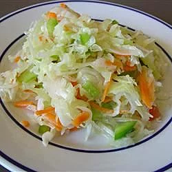

Coleslaw

Description
A sweet and crunchy salad
Ingredients
- 1 large head cabbage, shredded
- 1 green bell pepper, diced
- 1 onion, finely diced
- 2 tablespoons butter
- 1½ large carrots, shredded
- 1 cup white wine vinegar
- 1 cup vegetable oil
- 1 cup white sugar
Steps
- Combine the cabbage, bell pepper, onion and carrot.
- Whisk together the vinegar, oil and sugar. Pour enough dressing over salad to coat. Mix well , cover and refrigerate 6 to 8 hours.
- Drain any excess liquid, toss and serve cold.